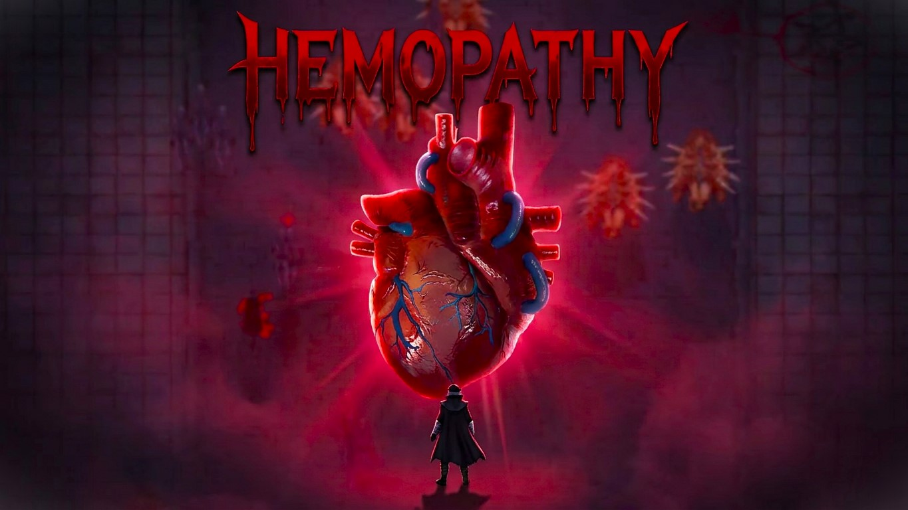

Visiones del Corazón



Un título de acción frenética y terror donde cada bala disparada extrae la esencia vital de tus enemigos para devolverla a tus venas. Atraviesa hordas de criaturas grotescas en tu camino hacia el Corazón, la fuente latente de la plaga. Tu cuerpo cambiara y reaccionará de acuerdo a la cantidad de sangre consumida, forzándote a equilibrar tu salud, tu cordura y tu poder.